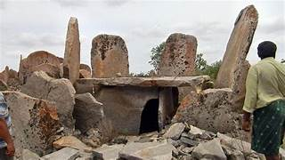

Megalithic Burial Site at Maganoor (Mudmal/Maganoor)
The Megalithic Burial Site at Maganoor (Mudmal) in Narayanpet district is one of South India's largest and most significant prehistoric cemeteries. Spread across nearly 100 acres along the Krishna River, the site dates back over 3,500 years to the Iron Age. It features more than 500 burial structures, including massive menhirs (standing stones up to 16 feet tall) and stone circles. These menhirs are believed to mark graves or serve ritual and astronomical purposes, as some align with the Sun's path or constellations like Ursa Major. The site also includes cup-marked stones, hinting at its use as an ancient observatory. Locals revere the menhirs as symbols of deified ancestors, helping preserve the site's integrity. Recognized for its archaeological value, the site is on India's UNESCO tentative list. Maganoor offers a rare glimpse into the spiritual and scientific lives of ancient communities.
Eklaspur Eco Park

Eklaspur Eco Park, located about 5 kilometers from Narayanpet town in Telangana, is a refreshing green space designed to promote environmental awareness and provide recreation for locals and visitors. Developed by the Telangana Forest Department, the park spans a well-maintained area featuring walking paths shaded by native trees like neem, mango, and tamarind. The park's lush lawns, flowering plants, and seating areas create a peaceful atmosphere, making it an ideal spot for morning walkers, families, and picnickers. A small playground within the park adds charm for children, while nature enthusiasts can enjoy the park's rich greenery and occasional bird sightings. Basic amenities such as restrooms, drinking water, and seating are available, ensuring a comfortable visit. The park is especially popular during weekends and evenings as a local getaway. Accessible by road, Eklaspur Eco Park serves as a serene and eco-friendly retreat, encouraging conservation and community well-being in rural Telangana.
Sri Padamati Anjaneya Swamy Temple, Makthal

Sri Padamati Anjaneya Swamy Temple, located in Makthal, Narayanpet district, is a unique and ancient shrine dedicated to Lord Hanuman. The temple is renowned for its rare west-facing Hanuman idol, believed to be the only one of its kind in South India. Legend says that Lord Jambavantha installed the idol, and the temple has been a sacred site for centuries. The sanctum is distinctive as it has no roof above the deity, symbolizing a direct connection to the divine. Devotees believe that prayers here help remove Shani Dosha (ill effects of Saturn) and bring strength, success, and blessings. The temple's annual Brahmotsavam festival in the Margashira month draws large gatherings from Telangana and neighboring states. The temple's spiritual significance, combined with its simple yet striking architecture, makes it a must-visit pilgrimage destination for devotees of Lord Hanuman.